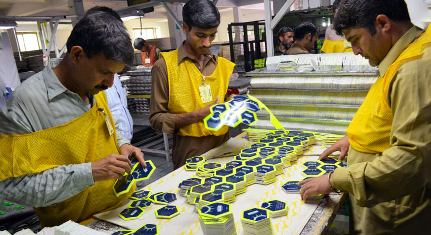

Предметы сферической формы, напоминающие современный мяч, известны человечеству с глубокой древности. В
игры,
чем-то похожие на футбол издревле играли в Китае, Египте, Древнем Риме. Более совершенные прообразы
футбольных
мячей появились на Британских островах в период позднего Средневековья. В качестве камеры использовались
мочевые пузыри свиней, а роль покрышки чаще всего выполняла обшивка из оленьей кожи. Подобная конструкция не
отличалась надежностью, такой мяч мог выйти из строя уже после нескольких сильных ударов. Научные разработки
середины 19-го века дали возможность заменить камеру животного происхождения на резиновую, которая была
гораздо
прочнее и придавала игровому снаряду форму, более походившую на сферу.
На современном этапе широкое применение получили бутиловые и латексные камеры. Первые позволяют более
длительное время удерживать закачанный воздух, зато вторые обладают большей эластичностью и обеспечивают
контролируемый отскок.

Как делают футбольные мячи
Несмотря на то, что первый снаряд, полностью состоящий из синтетических материалов, удалось создать еще в
начале 1960-х, футбольные мячи с покрышкой из натуральной кожи были широко распространены вплоть до конца
80-х
годов прошлого века. Это связано с тем, что консерваторы из мира футбола (многие из них входили в исполком
FIFA) настаивали на том, что мячи из натуральной кожи удобнее контролировать и что они обеспечивают большую
силу удара. Вместе с тем, недостатки таких мячей были куда более весомыми, поэтому переход на синтетические
материалы был делом времени.
Проблема в том, что при мокрой погоде кожа быстро впитывает влагу и футбольный снаряд набухает и становится
значительно тяжелее прямо в процессе игры. Современные модели мячей с покрышкой из поливинилхлорида или
полиуретана (этот материал используется гораздо чаще) отличаются повышенной прочностью, влагостойкостью и
гладкостью. Кроме того, передовые технологии отрасли позволяют сформировать рельефную текстуру поверхности
покрышки с целью улучшения аэродинамических свойств снаряда и создания дополнительного сцепления с
материалом
бутс и вратарских перчаток, что позволяет контролировать его с большей эффективностью.
Первые прообразы современных футбольных мячей представляли собой конструкцию из 18-ти сшитых вручную кожаных
панелей с отверстием, куда вставлялась резиновая камера. После надувания камеры при помощи специальной
трубки,
отверстие в покрышке приходилось зашнуровывать.
Спустя некоторое время, американским архитектором Ричардом Бакминстером была предложена классическая,
32-панельная конструкция мяча. Эта конструкция, состоящая из 12 пятиугольников и 20 шестиугольников, имеет
научное название - усечённый икосаэдр. Благодаря закачанному в камеру воздуху эта геометрическая фигура
приобретает форму, близкую к идеальной сфере. Подобная конструкция обеспечивала большую влагостойкость и
долговечность мяча.
Со временем производители отказались от классической конструкции и стали активно экспериментировать с
количеством и формой панелей. Эти эксперименты привели к появлению современных футбольных снарядов,
отличающихся превосходной сферичностью и балансировкой.
На данном этапе существуют три способа соединения панелей в цельную конструкцию:
-
Машинная строчка
-
Ручная сборка (сшивка)
-
Термосклеивание
Машинная сшивка является наименее затратным способом изготовления футбольных мячей. К тому же, автоматизация
процесса сборки панелей обеспечивает высокую производительность. Однако из-за того, что при машинной строчке
используется тонкая нить и, соответственно, тонкий слой материала покрышки, это делает конструкцию снаряда
крайне уязвимой. Мячи, произведенные по такой технологии, не предназначены для использования на
профессиональном уровне.
Машинная строчка - дешево.
Метод ручной сборки позволяет изготавливать снаряды, отличающиеся большей прочностью. Этот способ
предусматривает использование более толстых панелей, игл и нитей. Существенным минусом является то, что
высокая
трудоемкость процесса в сутки позволяет производить всего несколько единиц товара.
Ручная сбока мячей - надежно.
Самой передовой и дорогостоящей технологией сборки панелей является автоматизированное термическое
склеивание.
Армированная нейлоновая нить позволяет надежно соединить термополиуретановые панели, как между собой, так и
с
поверхностью камеры. На выходе получается цельная сферичная конструкция с отличными аэродинамическими
характеристиками.
Термошвы и робосборка - технологично.
Если говорить о странах-производителях футбольных мячей, то лидером здесь является южно-азиатский регион:
Пакистан, Таиланд, Китай, Вьетнам. Важно отметить, что если вы приобретаете фирменную продукцию ведущих
брендов, то за качество снаряда переживать не стоит, весь процесс производства находится под строгим
контролем. Главное, не нарваться на дешевую подделку.